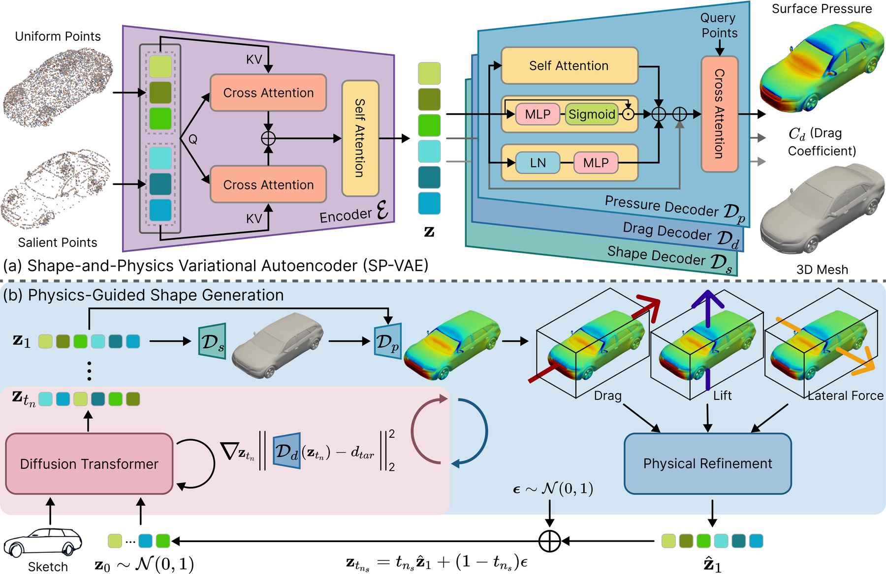
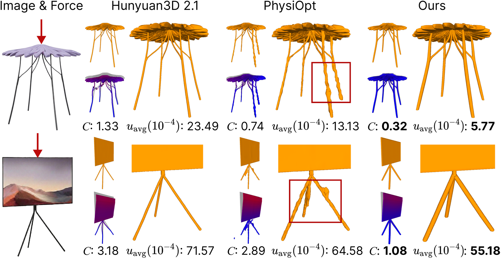

Existing generative models for 3D shapes can synthesize high-fidelity and visually plausible shapes. For certain classes of shapes that have undergone an engineering design process, the realism of the shape is tightly coupled with the underlying physical properties, e.g., aerodynamic efficiency for automobiles. Since existing methods lack knowledge of such physics, they are unable to use this knowledge to enhance the realism of shape generation. Motivated by this, we propose a unified physics-based 3D shape generation pipeline, with a focus on industrial design applications. Specifically, we introduce a new flow matching model with explicit physical guidance, consisting of an alternating update process. We iteratively perform a velocity-based update and a physics-based refinement, progressively adjusting the latent code to align with the desired 3D shapes and physical properties. We further strengthen physical validity by incorporating a physics-aware regularization term into the velocity-based update step. To support such physics-guided updates, we build a shape-and-physics variational autoencoder (SP-VAE) that jointly encodes shape and physics information into a unified latent space. The experiments on three benchmarks show that this synergistic formulation improves shape realism beyond mere visual plausibility.
Framework Overview

The proposed framework consists of two main components: (a) Shape-and-Physics VAE (SP-VAE) learns unified latent representations encoding both geometric structure and aerodynamic properties. The encoder maps uniformly sampled and salient surface points to a latent code, which is shared by three decoders: a shape decoder that predicts the signed distance field of the 3D shape, a pressure decoder that estimates the surface pressure, and a drag decoder that regresses the global drag coefficient. (b) Physics-Guided Shape Generation alternates between physics-regularized flow-matching updates and physical refinements, optionally conditioned on images such as sketches. The flow-matching step is augmented with a physics-aware regularization term that guides the latent code toward a target drag coefficient, while the physical refinement step backpropagates gradients of drag, lift, and lateral forces computed from the decoded shape. This alternating update satisfies both geometric plausibility and physical validity instead of drifting toward either extreme.
Physics-Guided Generation Results

Qualitative comparison of structural optimization under external forces. Given an image and an applied force, PhysGen generates shapes that are both geometrically faithful and structurally sound, achieving substantially lower compliance C and average displacement uavg than Hunyuan3D 2.1 and PhysiOpt, while avoiding the distorted supports (red boxes) produced by prior physics-driven optimization.
Poster
@inproceedings{you2026physgen,
author = {You, Yingxuan and Zhao, Chen and Zhang, Hantao and Xu, Ming and Fua, Pascal},
title = {PhysGen: Physically Grounded 3D Shape Generation for Industrial Design},
booktitle = {Proceedings of the IEEE/CVF Conference on Computer Vision and Pattern Recognition (CVPR)},
year = {2026}
}{kind=link}